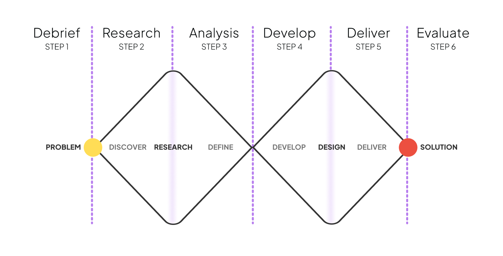

the power of the design doc
Taking the time to tailor one’s process helped us think broadly and not dive too fast into the details, to identify patterns and relationships in what were conceptual and visual systems. It helped us to identify core problems before diving into solutions, no matter the deliverable.
You’re often dealing with complex problems that stem from a variety of sources. When you are ready to move onto solving that problem, how do you keep track of the multiple directions you’ll explore? Why one worked over the rest? Do you have the links to those research findings you keep referencing? What exactly do you mean by the system? What about that meeting where you received feedback that might completely change your favoured direction? Did you make sure to take notes?
You can use something like Notion to keep track of your project process, use a school email and with an education account you'll have access to a lot more space. You can store your screenshots in a place with descriptions for later reference.
Here are two templates you can duplicate into your workspace and and adapt for use for your projects.
What is a process book?
A good process book includes all the stages of the design process from preliminary research through thumbnails, sketches, wire frames, comps, and final designs. It also explains the process through an incorporated narrative. Carefully chosen words and images demonstrate the thinking and development that led to your final design.
What goes into a process book?
Your process book should tell a coherent story through descriptions and pictures from beginning research to finished design. A thoughtful and well-designed process log becomes an important addition to your design portfolio. It tells a story.
Bear in mind that books have introductions, captions, notes, and most importantly, a narrative—a beginning, a middle and an end. A 60-page collage of outtakes with no text is not a process book.
This page divides the process document into 6 sections that you can map onto the double diamond proces document

Bear in mind that a process doc, is also a design problem. Think of a way to communicate your process that unifies everything inside the book. Create a layout structure on a design application like InDesign, Illustrator, or Adobe XD, and plan what will go on each page. Pick your colours and fonts, you should also organise your book into sections - for example introduction, research, analysis, development, and conclusions and include a cover with your name, the project title, and the course title
Remember this isn't the only way to create a process document, use this as a base but confirm with your professors in case they want something specific.
Debrief
Some of the first things to mention in your process documentation are the high level stuff you went through at the start of your process. The contents of this section can change based on the type of project you're tackling.
-
What would be the project statement of your project? Or your How Might We statement for the process?
-
What were some of the assumptions you made going into the project? This could be assumptions about the platform (This project would have to be a mobile app because..) or assumptions about users (users won't be willing to do...).
-
Remember it's okay if your assumptions aren't validated by research later, it's a part of of the process, and shows you you actually take research and process into consideration.
-
What was your process plan? How did you get from problem to solution? Why did you use this plan? Was it effective? What would you change about it next time?
-
What did you assume you could or couldn't accomplish when forming the plan (We knew we could do...because... Or we knew we couldn't do... because...)?
Research
This is the section to talk about your research and inspiration. Describe and visualise your primary and secondary research, you can include use screenshots, links, charts, diagrams, quotes from users, competitive analysis.
-
Ideally, when you present your research in a process doc you should show everything: what did you read, listen to and look at? Who did you talk to? What do your notes look like? How did you decide what was most important? How did you know when you were finished with your research?
-
But remember to distill the research and present it properly, rather than putting everything in as is. You want to curate the research to show why these were relevant to your process, while also showing you were curious.
Anlaysis
This section doesn't have to be huge, you can be very to the point about the things that truly matter to your solution.
-
What came out of all your research? What were the key discoveries? What validated your assumptions, what challenged your assumptions, what prompted new assumptions you hadn't previously realised?
-
How did the inspiration sources you looked at effect your thinking or vision for your project from here on?
Ideation
This is where you go over the your initial designs, your 'bad ideas', visualisations you worked on but scrapped, how did everything you di up until now become the project that you delivered?
-
Remember to not just dump everything, you need to curate it all so that who ever is reading your process documentation understands your thinking. You also don't need to show every tiny step, you pick and choose what what were the major shifts and why you made them.
-
Show your iterations and testing, how did you funnel down all your research and thinking into your delivered product?
Deliver
This is a showcase of your final product, demonstrate the hand off products, make sure to show and mention everything you created for the project at this point.
-
Make sure its the most important things, like a demo video, a link to a working website, a prototype.
-
You can use this section to connect back to your project statement and/or how might we. How did you satisfy your user's benefit sought
Evaluate
ou should conclude a case study with you've learned, what your outcomes were, and what you can do differently. Reflections can be included in small capacities to each section of the process doc, but definitely include a reflection for the end.
-
You can get a better idea of what to mention in your reflections on the frameworks page. You can include reflections based on 1-2 prompts per section of the process doc, and then do a full overall reflection here at the end, or use the prompts to only do a reflection at the end of the project documentation.
-
You can get a better idea of what to mention in your reflections on the frameworks page. You can include reflections based on 1-2 prompts per section of the process doc, and then do a full overall reflection here at the end, or use the prompts to only do a reflection at the end of the project documentation
-
Add an appendix in the end for all the other things, including references.
Any other work that supports the case study - sketches, proof of testing, research notes, interview notes, links to videos etc. should go into an appendix at the end. Remember to not use this section to just dump data, its still a part of your process document, it needs to be given context and should be formatted under the same headings as the sections of your process document (Plan, Discover, Insights, etc.).